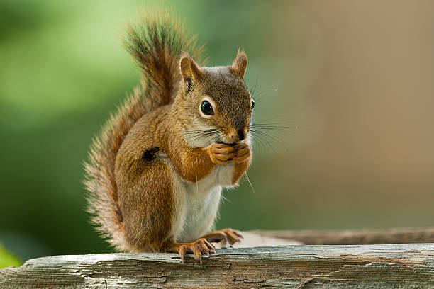
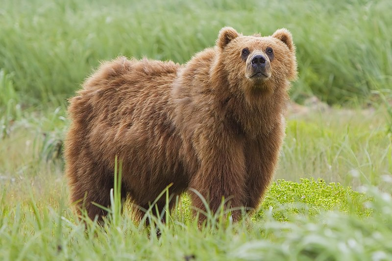

Forest
Forests account for 75% of the gross primary productivity of the Earth's biosphere, and contain 80% of the Earth's plant biomass. Biomass per unit area is high compared to other vegetation communities. Much of this biomass occurs below ground in the root systems and as partially decomposed plant detritus.

Squirrel
Squirrels typically have slender bodies with very long very bushy tails and large eyes. In general, their fur is soft and silky, though much thicker in some species than others. The coat color of squirrels is highly variable between—and often even within—species.
Bear
Bears are large animals with short tails that mainly live in the Americas, Asia, and Europe. They are the largest of the carnivores, or flesh-eating land mammals. However, besides the meat-eating polar bears and the bamboo-eating panda bears, most bears are omnivorous (eating both plant and animal matter).
Deer
Deer live mainly in forests but may be found in deserts, tundra, and swamps and on high mountainsides. They are native to Europe, Asia, North America, South America, and northern Africa and have been introduced widely elsewhere. Females are usually called does, and males bucks.

Panda
Pandas live mainly in temperate forests high in the mountains of southwest China, where they subsist almost entirely on bamboo. They must eat around 26 to 84 pounds of it every day, depending on what part of the bamboo they are eating. They use their enlarged wrist bones that function as opposable thumbs.